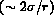
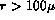

The final type of multiphase model is the multiple fluid model (better known as the two fluid model designating two phases or components). This model treats the general case of modelling each phase or component as a separate fluid with its own set of governing balance equations. In general each phase has its own velocity, temperature and pressure. The velocity difference as in the separated flow is induced by density differences. The temperature differences between the phases is fundamentally induced by the time lag of energy transfer between the phases at the interface as thermal equilibrium is reached. If the multiphase system involves rapidly changing flow conditions due to area changes in steady flow or transient conditions then the time lag for reaching thermal equilibrium between the phases may become significant in comparison to the characteristic time it takes for flow conditions to change. One may estimate this condition by computing a characteristic Fourier number (Table 3.1) for the system under expected flow conditions. Therefore, thermal nonequilibrium becomes important and one must include the possibility of a temperature difference by separate energy balances in a multiphase model for two or more separate fluids.
The modelling of pressure nonequilibrium is much more complex (Ishii, 1974). The pressure difference between two phases is caused by three main effects: (1) pressure differences due to surface energy of a curved interface,(2) pressure differences due to mass transfer, (3) pressure differences due to dynamic effects. In the first case the simple existence of an interface (probably curved) requires from overall mechanical equilibrium that some pressure difference exist between the phases. This pressure difference is proportional to the interfacial surface tension and inversely proportional to the radius of curvature  and is usually quite small in most applications (  m). The second effect is noticeable when the mass flux due to phase change is large at the interface between the phases; e.g., large evaporation or condensation rates. The final effect is caused by dynamics where one phase has a larger pressure relative to the other phase due to very rapid energy deposition or pressurization effects. A common example of an nduced dynamic pressure difference is the flow of a mixture of air bubbles and water through a converging-diverging nozzle. If the rate of flow is high and the area change dramatic enough the liquid will depressurize quickly as it passes through the nozzle leaving the vapor bubbles at a higher pressure. This dynamic pressure difference will cause the vapor bubbles to grow, overexpand and then oscillate around a new mean pressure. This example takes on the second effect if the situation were steam bubbles in water since mass transfer would also be present. The importance of pressure nonequilibrium between the phases is inversely proportional to the time scale of the rate of phase change or external pressure oscillations. For most applications of two-fluid modelling this pressure nonequilibrium is usually neglected; i.e., only when the rate of phase change and pressure oscillation become of equal time scales does this nonequilibrium effect become important. One way to estimate this is to compare the flow velocity to the speed of sound in the multiphase system (note that computing a mixture sound speed is not a straight forward task): i.e., only when the flow velocity approaches or exceeds the multiphase sound speed would the pressure nonequilibrium may be important.
The two-fluid model equations are given in Tables 3.4. One should note that when a two-fluid model is used a number of interfacial transport coefficients ( ,  , , ) are defined and require constitutive relation models to complete the overall model. This approach has an advantage in that the actual transport processes can be rigorously defined, however, the disadvantage is that one is required to model these kinetic processes in detail, which implies a much greater depth of experimental data and insight.
, , ) are defined and require constitutive relation models to complete the overall model. This approach has an advantage in that the actual transport processes can be rigorously defined, however, the disadvantage is that one is required to model these kinetic processes in detail, which implies a much greater depth of experimental data and insight.
The usual method of modelling pressure differences between the fluids is to assume that the pressure is equal in both phases (Tables 3.4, Eq. 6). If, as previously discussed, one finds that pressure nonequilibrium between the phases is important one must introduce a local constitutive relation which accounts for this pressure difference due to dynamic and interfacial effects. For example, in research done with explosive boiling a local momentum equation (e.g., Rayleigh momentum equation) is used to model this difference in the pressure of the two fluids; this allows for dynamic pressure differences as well as the effect of surface tension and mass transfer.
The other required constitutive relations for interfacial transfer ( ,  , ) are complicated functions of the fluid velocities and their local properties. These kinetic models are also a strong function of the multiphase flow pattern. The model one would develop for the interfacial shear stress or heat flux is significantly different for a dispersed flow pattern in contrast to a stratified flow pattern. In fact, the interfacial models would be different if one had gas bubbles in a liquid versus liquid droplets in a gas. For example in the former case one would find that the stable characteristic size of gas bubbles at low void fractions might be near the Taylor critical wavelength (dimensionless length-D/A
, ) are complicated functions of the fluid velocities and their local properties. These kinetic models are also a strong function of the multiphase flow pattern. The model one would develop for the interfacial shear stress or heat flux is significantly different for a dispersed flow pattern in contrast to a stratified flow pattern. In fact, the interfacial models would be different if one had gas bubbles in a liquid versus liquid droplets in a gas. For example in the former case one would find that the stable characteristic size of gas bubbles at low void fractions might be near the Taylor critical wavelength (dimensionless length-D/A  2 , Table 3.1) where as in the latter case the diameter would be determined from the critical Weber number (We
2 , Table 3.1) where as in the latter case the diameter would be determined from the critical Weber number (We  7-12, Table 3.1) which is only partly related to Taylor instabilities.
7-12, Table 3.1) which is only partly related to Taylor instabilities.
The final point to make about all the multiphase models is how turbulence is included in the analysis. The first point one should notice is that the multiphase governing equations do not seem to directly include the time-averaging due to local turbulent velocity fluctuations. This is somewhat misleading because when one looks into the complete derivation as performed by Ishii (1974) one finds that constitutive relations for  and
and  inherently include turbulence effects. The important question then is how is turbulence modelled in these relations. At the present time turbulence modelling is rather phenomenological when compared to the detailed formulations for single phase flow. The inherent assumption in modelling
inherently include turbulence effects. The important question then is how is turbulence modelled in these relations. At the present time turbulence modelling is rather phenomenological when compared to the detailed formulations for single phase flow. The inherent assumption in modelling  and
and  is that one can use simple turbulence models (e.g., empirical friction factors, mixing length scales) developed for single phase applications at the local level of the multiphase system and then correct for effects of multiple phases by a combination of phenomenological models averaging techniques for the bulk flow, and using empirical correlations from specific data. The following sections considering pressure drop and critical flow models are good examples of these techniques. More fundamental approaches to include turbulence have begun, but are not discussed in detail here.
is that one can use simple turbulence models (e.g., empirical friction factors, mixing length scales) developed for single phase applications at the local level of the multiphase system and then correct for effects of multiple phases by a combination of phenomenological models averaging techniques for the bulk flow, and using empirical correlations from specific data. The following sections considering pressure drop and critical flow models are good examples of these techniques. More fundamental approaches to include turbulence have begun, but are not discussed in detail here.